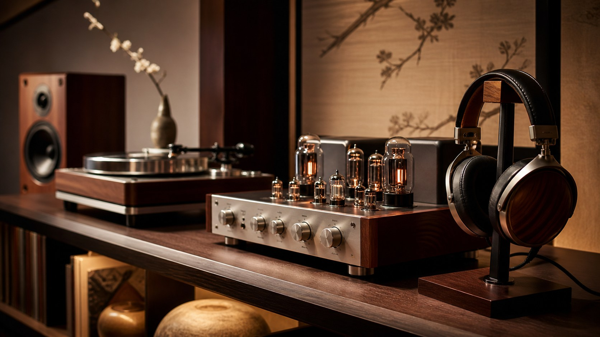

十二流派診断

雅玩流

家元：弄彩堂（ろうさいどう）
"雅玩流とは、オーディオを実用品にとどめず、眺め触れ所有する喜びそのものを深める愛玩の道です。"
雅玩流の言葉
雅玩流にとって、オーディオ機器は音を出す道具である以前に、愛玩の対象である。重厚なアンプのノブを回す指先の感触、真空管の橙色の光、ターンテーブルが静かに回り始める瞬間——音楽が始まる前から、すでに喜びは始まっている。

機材を磨き、写真に収め、棚に並べ直す行為もまた、この流派の修行の一部である。音を出していない時間にも機材はそこにあり、その存在感が部屋を満たす。「使う」だけでなく「持つ」ことの喜びを深く知る者たちが、雅玩流の担い手である。
向く環境は、美しい筐体のビンテージ機器、職人の手による工芸的なスピーカー、あるいは骨董的な価値を持つオーディオアクセサリーなど。耳と目と手で音楽を愛でる者の流派である。